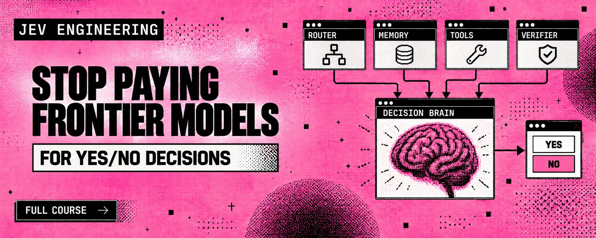
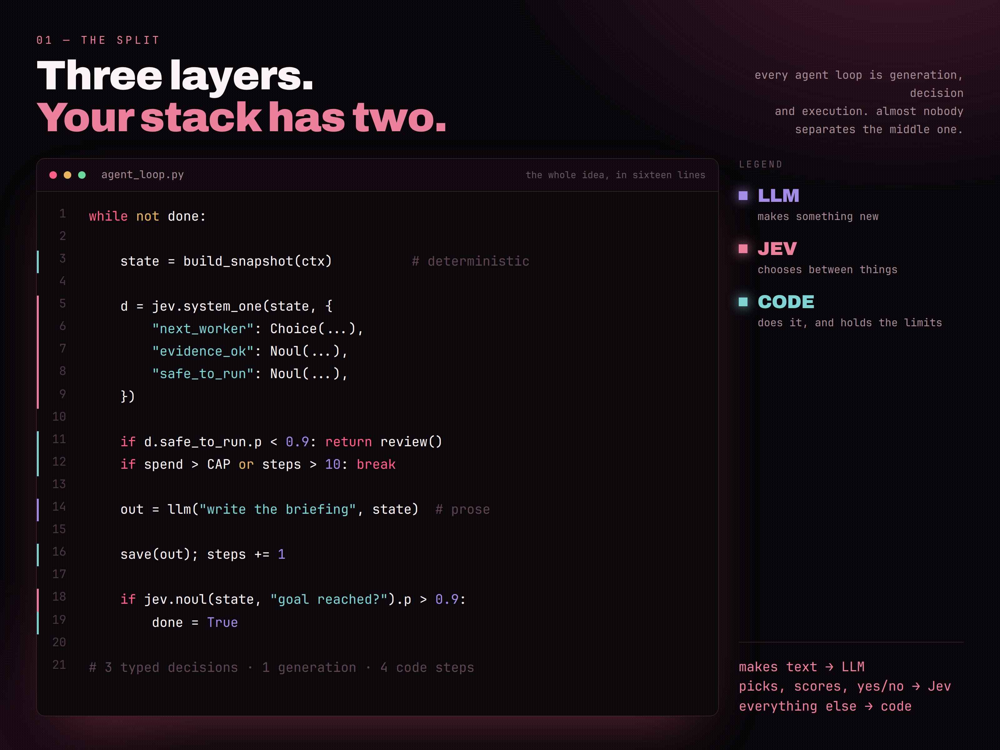
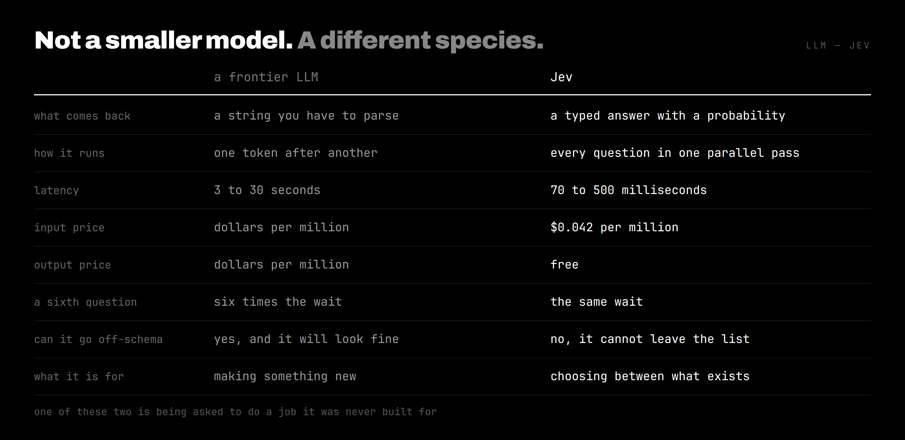
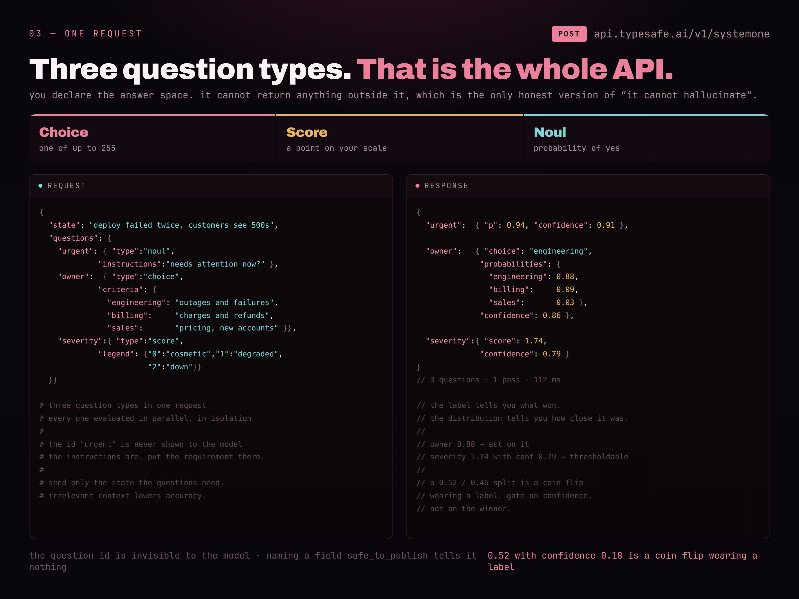
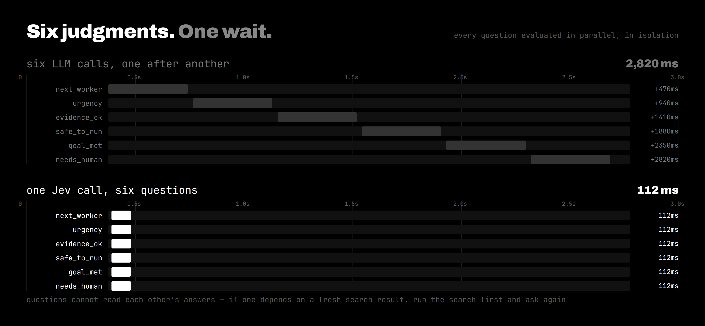
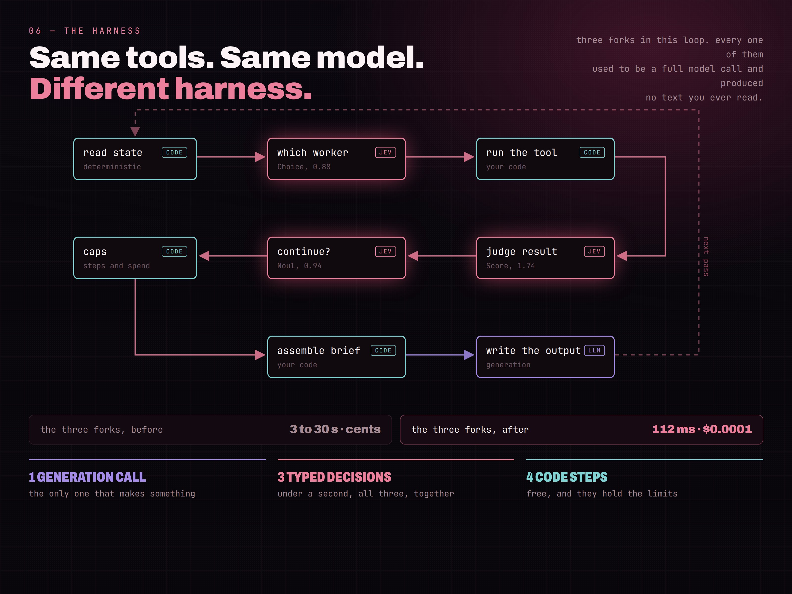
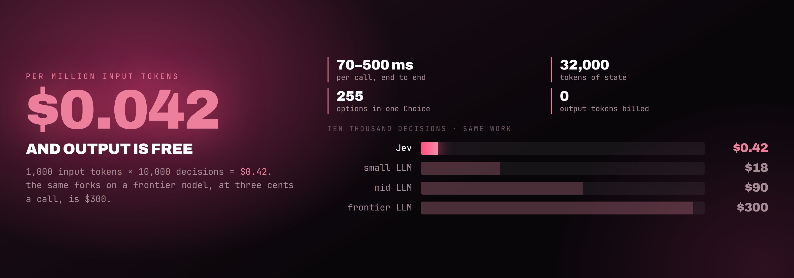
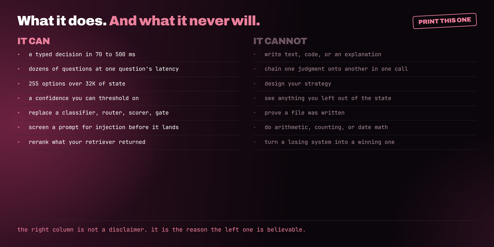

打开任意一个你已经上线的智能体 trace，数一数里面的调用。
模型挑选下一个工具。模型判断结果好不好。模型决定任务是否完成。模型检查命令是否危险。模型给检索到的段落打分，看值不值得留下。
五次调用。其中四次，根本不会产出你以后会去读的文本。
你用「生成」的价格，买了一次路由决策。你等了三到三十秒，只为拿到一个最终会被代码变成分支的词。你还为这段响应写了 parser、validator 和重试——而它从头到尾只可能是三个值里的一个。
2026 年 9 月 15 日，TypeSafe AI 结束两年潜伏，以 DCVC 领投的 4000 万美元融资亮相，并发布了一款专为那四次调用而生的模型。它叫 Jev，不会写句子。
这个限制，就是整个产品。
我花了将近一周把它拆开，并做成了一整门课。如果你想要端到端的搭建而不是摘要，在这里：
https://jev-engineering.site
下面是可动手的版本。十个步骤、真实代码，以及发布帖里没写清的部分。
杰文斯悖论，以及为什么你的账单降不下来
Jev 的名字，来自 1865 年的一条经济学规律。
William Stanley Jevons 注意到：当蒸汽机烧煤更高效之后，英国并没有少烧煤，反而烧得远更多。效率让煤在以前不值得用的地方也变得合算，总消耗爆炸式增长。
Token 每个季度都在变便宜。你的账单却没有。
每一次降价，都会打开一个新的「可以塞模型调用」的位置，而调用次数的增长，比价格下跌还快。去年只跑三次模型的循环，现在会跑十一次——因为每一次都已经便宜到「值得」。
TypeSafe 的赌注是：出路不是用更便宜的模型做同样的事，而是用另一种模型，去做第一种模型从未被设计去做的事。
01. 拆分——找决策，不要找文本
每个智能体循环都由三类操作构成，而几乎所有技术栈都会把其中两类揉成一类。

生成（Generation）：做出尚不存在的东西。调研、散文、代码、对一次失败的解释。这需要前沿 LLM，而且以后也还会需要。
执行（Execution）：把事做掉。调工具、写文件、十步后停下、守住花费上限。这是代码，免费，而且从不会改主意。
决策（Decision）：夹在中间。下一个工人是谁。这次改动有多危险。要不要让人看一眼。答案空间在你提问之前就已知，而答案会直接进入一条 if。
贯穿本文，我会搭同一件事：一道闸门——读一次代码改动，再决定它该 ship（放行）、return（打回），还是需要人类。我选它，是因为每个团队都已经有这个决策，而几乎所有人要么手工做，要么烧掉一次前沿模型调用。
拆分的规则只有一条，一句话就够：如果操作在创造文本，留给 LLM；如果在选选项、打分，或答是/否，交给 Jev。
这就是 Jev 工程。下面全是怎么接线。
02. Playground——写任何代码之前，先测一个问题
打开 TypeSafe Playground 并登录。访问走 waitlist，目前当天就能批，但别在没确认前就把排期押在上面。
把下面这段贴成你的 state：
{
"files_touched": ["api/auth.py", "api/session.py"],
"lines": {"added": 34, "removed": 9},
"tests": "12 passed, 0 failed",
"migrations": false,
"plan_said": "refactor token refresh only"
}加一个 Choice 问题：这次改动该怎样处理？定义三个选项。测试通过且 diff 与计划一致 → ship；diff 超出计划描述 → return；改动不可逆，或碰到计划从未提及的东西 → escalate。
跑一遍。然后把 migrations 翻成 true，其它一概不动，再跑一次。
盯着分布怎么移动。这就是全部交互；在这里花五分钟，比读文档更管用。
Jev 究竟是什么
TypeSafe 称它为 System One 模型，借用 Kahneman 对「快直觉判断」与「慢深思」的划分。最短且准确的描述是：语义决策引擎。
你发送两样东西。
State — 描述当前局面的文本或 JSON。一份 diff 摘要。一张支持工单。一份订单簿快照。凡是你的代码内存里已经有的。
Questions — 你希望针对该 state 做出的决策；每一个都事先声明答案形状。
返回的是带概率的类型化答案。没有散文。没有要修的 JSON。没有模型因为「感觉像」而发明的第四个选项。

我在读过的每篇写照里都站住了的心智模型是：LLM 把 state 映射成文本；Jev 把 state 映射成决策分布。普通代码在它算得出的值上分支；Jev 在它算不出的值上分支。
if (diff.lines_added > 400) 是计算机能检查的。
if (this change goes beyond what the plan described) 不是——而这道缝，正是你一直在租聊天模型的原因。
03. SDK——安装并接通 API
你需要一个已开通 API 的账户，以及来自 dashboard 的 key。调用记在该账户账单上。
安装 Python 3.12 或更新版本，然后打开终端。
python3 -m venv .venv
.venv/bin/python -m pip install --upgrade typesafe-sdk
在 Windows 上，两行分别是 py -3 -m venv .venv 与 .\.venv\Scripts\python.exe -m pip install --upgrade typesafe-sdk。
把 key 放进环境变量，不要写进源码：
export TYPESAFE_API_KEY="your-key"如果你用编程智能体，加上官方 skill，好让它写出正确的调用：
npx skills add typesafe-ai/skills --skill typesafe-ai按提示选择你的智能体。skill 提供集成说明；Jev 本身仍通过 API 运行。
04. State——在代码里建快照，不要丢给模型
我第一小时犯过的最大错误，就是把原始 diff 扔给 Jev，然后指望它自己搞定。
凡是可计算的，都留在代码里。行数、文件路径、测试退出码、是否存在 migration 文件、diff 是否越出计划路径。这些都不需要模型；花钱让模型去数数，最后会变成「便宜模型比贵模型还贵」。
def snapshot(diff, plan, test_exit):
planned = set(plan["paths"])
touched = set(diff.files)
return {
"files_touched": sorted(touched),
"outside_plan": sorted(touched - planned),
"lines": {"added": diff.added, "removed": diff.removed},
"tests": "passed" if test_exit == 0 else "failed",
"migrations": any(f.startswith("migrations/") for f in touched),
"plan_said": plan["summary"],
}六个字段，全部确定性，不到 200 token。这就是全部输入。
保持稠密，保持诚实。你加的每个字段每次调用都会被读；无关上下文会降低准确率，而不是提高。
05. Questions——Choice、Score 与 Noul
问题类型恰好三种。这就是完整的 API 表面。

Choice 从你定义的列表里选一项，最多 255 个，并为每个选项返回概率，外加一个 confidence。
Score 把 state 放在你定义的有序刻度上。定义三档，结果在 0 到 2 之间，可含小数。
Noul 回答是/否问题，返回「为真」的概率。名字怪；要紧的是你得到一个 0 到 1 之间、代码能直接用的数。
三者可以混在同一次请求里：
from typesafe_sdk import Choice, Noul, Score, TypeSafeClient
QUESTIONS = {
"verdict": Choice(
instructions="What should happen to this change?",
criteria={
"ship": "tests pass and the diff stays inside the plan",
"return": "the diff goes beyond what the plan described",
"escalate": "irreversible, or touches something unplanned",
},
),
"blast_radius": Score(
instructions="How hard would this be to undo?",
legend={"0": "one file, revert it", "1": "several files",
"2": "data or schema, cannot revert cleanly"},
),
"needs_human": Noul(
instructions="Should a person read this before it merges?",
),
}有两个细节能省你一周。
Jev 看不见你的 question ID。字段名叫 needs_human 完全无贡献。要求写进 instructions，以及每个选项的描述，而不是变量名。
并且要给证据，不要给摘要。「测试跑过了」远不如：哪些文件动了、计划怎么说、两者在哪里不一致。
06. 闸门——一次调用、三个答案、你的阈值
整段决策如下，比 state builder 还短：
with TypeSafeClient(model="jev-1.13.0") as client:
r = client.system_one(state=snapshot(diff, plan, test_exit),
questions=QUESTIONS)
v = r.choices["verdict"]
radius = r.scores["blast_radius"].score
human = r.nouls["needs_human"].p
if radius >= 1.5 or human >= 0.70:
decision = "escalate"
elif v.choice == "ship" and v.confidence >= 0.88:
decision = "ship"
else:
decision = "return"仔细读底部那段，因为人们最容易在这里栽。
硬规则先胜。 blast radius 永远压过 verdict，无论 verdict 多自信。模型对「不可逆的东西能不能过」没有投票权。
然后是自信路径。其余全部落到 return——这是便宜的失败。
阈值写在这里、写在代码里，这样你可以在 pull request 里审。按「做错的代价」为每个动作各写一条。ship 上的 0.88 只是占位，直到你有自己的标注样本；confidence 不是准确率百分比，把它当准确率，是最快做出坏闸门的办法。
概率才是产品
类型化答案解决了一半问题。分布解决另一半。
实际返回长这样：
{
"verdict": {
"choice": "ship",
"probabilities": {"ship": 0.52, "return": 0.46, "escalate": 0.02},
"confidence": 0.18
},
"blast_radius": {"score": 0.4, "confidence": 0.81},
"needs_human": {"p": 0.31, "confidence": 0.77}
}ship 赢了。相对 return 只多六个百分点，confidence 是 0.18。
自动合并会很鲁莽——而如果只看标签，你永远不会知道。LLM 会用一句自信的「看起来可以 ship」告诉你，却绝口不提这场比赛有多接近。
于是你得到一个可以写一次、到处复用的模式：
- 高置信、小后果：自动执行
- 中置信：确认，或升级到更强模型
- 低置信：交给人，或先去收集更多 state
Jev 用 Reinforcement Learning for Calibrated Decisions（RLCD，面向校准决策的强化学习） 训练，用真实结果而非人类偏好去优化概率。意图是：在大量预测上，标成 90% 的答案大约有 90% 是对的。
在你自己的数据上验证之后再依赖它。校准是跨组度量的；它从不承诺某一个答案一定正确。
07. 并行——把问题批进同一次调用
这是会改变你如何设计循环的部分，也是大多数人第一次读时错过的部分。
System One 模型在一次请求里并行且隔离地评估每一个问题。加第六个问题几乎不动时钟。成本只是那个问题的 token，别无其它。

所以别再问一个、等一等、再决定下一个问什么。
我的闸门问三个。同样的墙钟时间里它可以问八个：是否碰到 auth、是否加了依赖、改动行上的测试覆盖是否真实、commit message 是否匹配 diff。
已经有人把同样形状的东西接到 feed 而不是 diff 上：每帖八个问题，三天的帖子，整轮大约两秒、七毛钱（美分）量级。它剥掉诱饵与未披露广告，并把 like/reply/repost 比率与正文并排权衡，而不是单独信任任一信号。
嵌入帖：https://x.com/i/status/2101074194260000982
八个问题 ≠ 八倍工作量。这正是该原语存在的全部理由，也是为什么你该围绕批次而不是单个问题来设计。
一个问题是演示。一次调用打满一整套，才是专业模式；批处理的经济学也强烈奖励它。
值得背下来的约束：问题读不到彼此的答案。若某决策依赖一次新鲜搜索结果，先跑搜索，再在第二次请求里问。隔离，正是并行的代价与收益。
到这里，多数人会想要一个已经接好的路由器，而不是片段。那是课程的第三模块，队列、阈值与 shadow-mode 已经接好：
https://jev-engineering.site/
08. 动态菜单——每一轮重建选项
浏览器可用动作在每次点击后都会变。Browser Use 会根据此刻真正看得见的控件建一份新鲜列表，再让 Jev 从中选。小型 LLM 只在某个字段需要键入文本时介入。
把这套设计用到你自己的路由器上。
从此刻存在的东西建 choices。若闸门能路由到三位审阅者，只送当前在线的两位。若在检索段落中选择，送你手里现有的 ID，而不是上一轮的。
否则，你的决策模型是在选昨天的菜单——它会一直点已经离职的审阅者，或一小时前删掉的来源。
候选列表很大时，先在代码里滤掉明显不匹配的，对剩余打分，再在短名单里选。Choice 最多支持 255 个选项，但最便宜的选项永远是你从未发送的那个。
09. 护栏——harness 才是差异所在
TypeSafe 材料里有一句值得坐下来想的话：在同一模型上，harness 是 78% 与 42% 的差异。相同权重，不同的循环工程。

编程 harness 已经以某种形式交付过一阵子。Claude Code、Codex 与 Cursor 都会在执行前对危险动作分类。这个分类器步骤，是人们开始信任智能体的很大一部分原因；而在此之前，它住在这些产品的封闭部分里。
现在这个模式对所有人可用了——因为存在一个便宜且够用的分类器。
LangChain 的 middleware 用四行展示形状：
from langchain.agents import create_agent
from langchain_typesafe.experimental.middleware import AutoModeMiddleware
guardrail = AutoModeMiddleware(tools=["bash"])
agent = create_agent("openai:gpt-5.6-luna", middleware=[guardrail])每次工具调用在执行前被检查。危险的拦下，安全的放行，检查本身烧掉零生成 token。
同样的想法也可以跑在栈的另一端，做成模型路由器。Jev 读请求，挑最便宜且可能完成的模型；昂贵模型只为真正需要它的工作醒来。
这两层都不写一个字。也都不加你能感觉到的延迟。
再往上，应用仍需要那些无聊的部分。动作上限。花费上限。已保存进度。中断之后，应先检查上次已完成的动作再重复任何事——因为一个自信的答案，并不能证明文件已经写入或分支已经合并。Browser Use 在 Jev 返回 DONE 之后，会独立检查结果；这份分离值得照抄。
10. 成本——四分钱每一百万到底买到什么

Jev 输入价为每百万 token $0.042。输出 token 免费。
按大约每次决策计费 1,000 输入 token 算，一万次决策的推理费是 $0.42。同样一万次分叉若用前沿模型、按每次三分钱计，是 $300。
这是算术，不是基准测试，也是推销话术里诚实的那一版。
基准数字更软，你该这样对待它们。在 TypeSafe 自己的四工作流评测上，Jev 与前沿共识的一致率大约 68%，接近中档 LLM，成本却只是零头。宣传里的「快 200×、便宜 400×」来自厂商自己的评测，处在有利的一端。把它们当天花板，而不是承诺。
前 72 小时里人们真正上线的东西，比评测表更有说服力。
Browser Use 把 Jev 接到浏览器智能体里，用 7 秒、$0.0039 找到航班。值得读细字：计时从第一次页面观察之后开始，而且智能体是找结果，不是订票。
Hassan 分类了 1,018 篇 AI 研究论文，总共 $0.08，中位每篇 256ms。
Riley Brown 用三秒半美分量级分类了 500 封邮件。
Alex Volkov 把它做成 Claude 插件，给工具调用打相关性分，把一次会话从近 1M token 压到 86K，耗时一秒。那不是摘要。那是以 Jev 速度跑的相关性过滤器。
这些都是单次运行。把算术变成业务数字的，是一家机构：SEO 审计以前大约每单 $250。同样的客户、同样的交付物，账单大约降了九成。
嵌入帖：https://x.com/i/status/2101090579127951694
逐行读他们的拆解：九项加速里，没有一项是生成。读分析、检查什么被引用、排序哪类页面会被挑中、跨数千页做缺口分析。每一项都是在已知选项上做决策，而每一项此前都在悄悄按前沿价格计费。
按完成的任务记账，而不是按调用。一次便宜决策若无缘无故打回一次本来不错的改动，会换来一轮人类往返——那比本文里任何一次模型调用都贵。
「不会幻觉」这句话需要一次纠正
TypeSafe 说 Jev 不会幻觉。这只在一个狭窄定义下成立，而这个狭窄定义很重要。
Jev 不能返回你 schema 之外的选项。你定义了 ship / return / escalate，它就不能发明 revert。它也不能在你的代码期望标签的地方，交回一段畸形散文。
它完全可以在自信的情况下，选错一个仍然合法的选项。
类型安全防止非法形状。它不保证判断正确。一个 schema 合法的错误，仍然会合并进破坏生产的改动。
准确的句子是：Jev 不能破坏已声明的输出 schema，但它仍然可能错。
谁卖给你更短的那一版，谁就还没把这东西送进生产。
它不该出现的地方

答案空间一旦不再已知，Jev 就立刻不再有用。
它不能写、不能摘要、不能生成代码、也不能自我解释。算术、计数、日期比较与精确字符串操作上不可靠——所以那些继续放在代码里，那里本来就更快更便宜。当决策需要若干隐藏推理步骤时它会吃力，于是把判断拆成更小的问题，或换用推理模型。它不能抽取未知值；先找出候选，再让它从中选。
无关上下文会降低准确率——这与我们在 LLM 上养成的直觉相反。只发送问题真正需要的 state。
而压过所有其它规则的一条：若确定性代码已经正确解决，就留着代码。我的闸门不会问 Jev「测试过了没」。它读退出码。
再加一条诚实的 caveat。闭源权重、早期访问、仅文本输入、尚无独立校准数据。太早谈盲目信任。
上线——别制造新的失败模式
便宜模型仍然可以很贵：如果它的错误制造重试、人工审阅或事故。度量整个工作流，而不是 token 单价。
管用的顺序：
- 挑一个有界、低风险、你能叫出可能答案的决策
- 在调用模型之前写好 rubric，并定义每个选项属于什么
- 收集带期望答案的真实样本，包括模糊与对抗样本
- 在现有逻辑旁跑 shadow mode，什么都不改
- 画出准确率对 confidence 的曲线，从那条曲线设阈值，而不是从一篇博文
- 先自动化最安全的分支，不确定的留给人或更强模型
- 钉住模型版本，并记录问题、准则与阈值，使任何改动可回放
最后一条是多数团队会跳过的纪律。你的问题是程序的一部分。给它们做版本、做审阅，并在模型或 rubric 变更时重跑评估集。
我让闸门在 shadow mode 里跑了两天，才允许它拦截任何东西。它与我分歧了十一次。其中九次是我的阈值问题，不是它的判断——演示里永远发现不了这一点。
真正改变了什么
Jev 有趣，不是因为它比 LLM 更会写。它是拒绝写。
它贡献的是一个更像软件、而不是更像对话的模型接口：固定答案类型、显式不确定性、并行问题，以及留在你代码里、可被审阅的分支。
真正的发现不是 7 秒航班 demo，也不是 $0.08 的分类跑。而是：你的智能体内部，有多少昂贵调用从未需要生成。
让 LLM 调研、规划、写作。
让 Jev 路由、打分、批准、升级。
让代码执行决策。
这份拆分会改写整个栈，并且在最终取代 Jev 的模型出现之后仍然成立。
多数构建者会继续把前沿 token 花在每一个是、否、路由和打分上——因为能跑，而且没人审计 trace。
把「思考」与「决策」分开的人，会用账单的零头，交付更快的智能体。
上面是地图。课程是带路：从空白终端到带真实阈值的决策层，十步走完，外加已经上线的五种生产模式：
https://jev-engineering.site/
从一个决策开始。给它最少的 state。把它的概率记在你今天已有做法旁边，让它先挣到一个分支，再把整个循环交给它。
你这周付给前沿模型的钱，多半不是在买思考。是在买选择。
别忘了关注我，并订阅我的 Telegram 频道：
https://t.me/+75nMf005jRpjMDU1